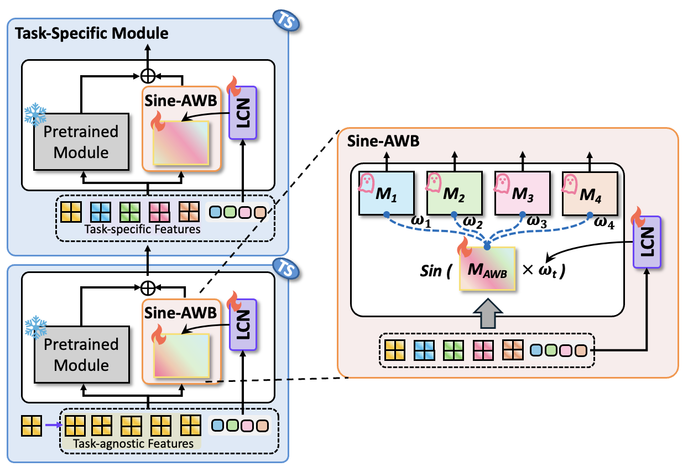

Multi-task learning (MTL) aims to equip a single model with the ability to solve multiple tasks efficiently; however, current parameter-efficient fine-tuning (PEFT) methods remain largely limited to single-task adaptation. We introduce Free Sinewich, a parameter-efficient multi-task learning framework that achieves efficient weight reuse through frequency switching. A lightweight Clock Net first determines task-dependent frequency with negligible overhead (Free). These frequencies modulate a Sine-AWB (Sinewich) layer, where low-rank factors and convolutional priors are combined into a single kernel and transformed via an elementwise sinusoidal transformation to produce task-specialized weights. Theoretically, sine modulation enhances the rank of low-rank adapters, while frequency separation decorrelates the weights of different tasks. On dense prediction benchmarks, Free Sinewich achieves state-of-the-art performance-efficiency trade-offs (e.g., up to +5.39\% improvement over single-task fine-tuning with only 6.53M trainable parameters), offering a compact and scalable paradigm based on frequency-based parameter sharing. Our code is publicly available.

Adjust the frequency slider to match the target frequency. When the correct frequency is found, the secret image will be revealed.
Visualizing element-wise sine transform: sin(freq * learned_matrix)
Frequency (ωt) = 10
@article{liu2025freesinewich,
author = {Shih-Wen Liu, Yen-Chang Chen, Wei-Ta Chu, Fu-En Yang, Yu-Chiang Frank Wang},
title = {Free Sinewich: Frequency-Modulated Adaptive Weight Broadcasting for Multi-Task Learning},
year = {2025},
}